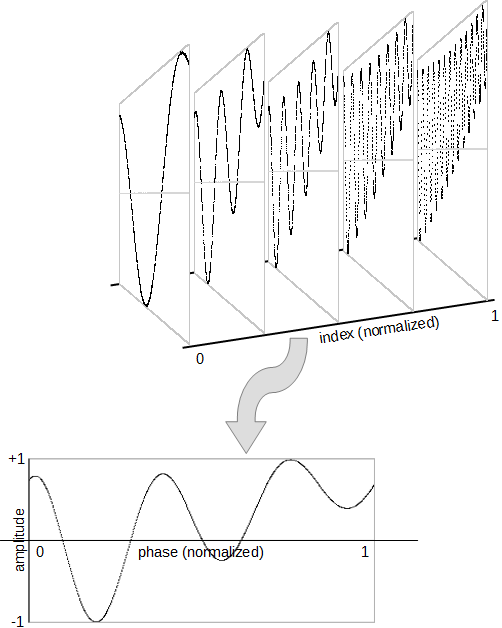
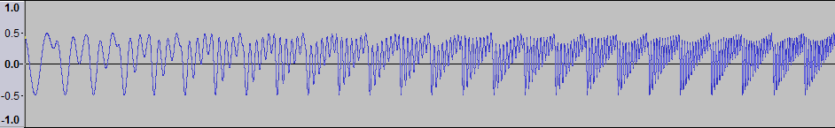

Indexed Wave Table Oscillator
The indexed wave table oscillator provides waveform generation through scanning a table of data corresponding to a single period of a waveform. The method is generalized to support indexing across an array of tables to provide one degree of freedom which can be parameterized to affect timbre in musical ways.
The array of tables is distributed linearly in the indexing interval [0..1]. Index values that do not fall exactly on a table result in a weighted linear interpolation between the two tables closest to the index.
The indexing effect can be used to create sounds that "morph" over time. However, note that the oscillator provides only indexing into a table dataset. Creation of meaningful waveform data must be provided by the author of the document.

Figure 1: Indexed Wave Table Parameterization
The following example demonstrates creating an array of table data algorithmically, using the classic "reson" 2-poll all pass filter, with the table index parameter corresponding to the cutoff frequency of the filter. Sweeping the index smoothly from 0 to 1 results in a transition which looks like:

Figure 2: Index Sweep
The indexed wave table example can be downloaded.